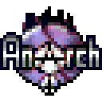

Anarch
the suckless, anticapitalist, public domain game, for everyone

THIS IS SPECIAL
This isn't a 90s style retro shooter, this is a 90s shooter.
This game runs everywhere and adheres to extreme simplicity.
It is so efficient, portable and hackable that not even Doom can
match it. It has completely no dependencies and doesn't even
use floating point in case your computer doesn't have it. It can
fit into TODO (with assets included!) and runs with XXX RAM. No build
system, library, internet connection or package manager is required for
compilation.
This game is not just a mere entertainment, it is an art that
categorically rejects capitalist technology.
IT'IS MORE THAN A GAME
This is not a mere game meant for killing time or low goals such as making
profit, this is an art, a tool, a blueprint, a manifesto. Anarch can be
used for entertainment, but also for education, research, media creation,
as a benchmark, as a test, as an environment, as an engine, as a basis for
something greater. Only your imagination is the limit. Nothing is hidden,
everything is allowed and encouraged, no burdens are imposed.
NO ONE OWNS THIS
Not even I, the creator, own any part of this game.
I have purposefully created everything myself from scratch,
including the engine, graphics, sounds, music, even the font and palette,
so that I could eventually give up all my rights and
dedicate this game fully and completely to the public domain,
to you, my dear fellow human being. No one shoud be allowed to own
information and art.
I've done my best to ensure this is 100% free as in freedom sotware and
culture, well understandable and documented. This isn't made for any
profit. This is made out of love, for the greater good.

Download
- 64 bit GNU SDL
- Pokitto
- GB Meta
- M$ Win$hit SDL
- play in browser
Explore
FAQ
- Why?
-
Because I find it ridiculously depressing that in a world where we have
millions of computer games there isn't a single serious one made
purely for the benefit of everyone on the planet, without self-interest
(liceses, ads, DRM, ...) being embedded somewhere underneath. It may be
one of the saddest things about this so called "advanced" society.
- So I can really do anything with this?
-
Legally yes, you are only limited by your morals. I believe written
law is extremely bad and that no one should be allowed to own
any information, so I purposfully abandon my legal ability to "defend" my
work and try to make you use your moral sense instead, which you may have
stopped using due to being told by the rules what is or isn't good. I
ask you, without it being a legal condition, that start sharing your own
work freely as I do, to spread this mentality. But only if you agree with
me.
- Who are you?
-
I am an anarcho-pacifist programmer. At day I am forced to be a
cleaning slave at a factory, at night I contribute to society. You can
read more about me at my website.
- Is this a joke?
- No.
- Can I support you?
-
Yes, this isn't made for any profit, but if you decide you want to gift
some food to a fellow human being, you can find my support info at my
website.
- I have a question about the code...
-
- I have a question about your opinions...
-
Support Better Society
- support social anarchism
- support pacifism
- support free software
- support free culture
- reject capitalism
- reject intellectual proeprty
love and peace <3